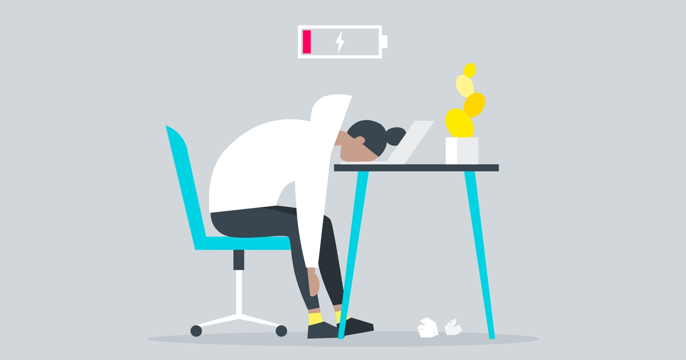

Recently, I had the feeling of having so many opportunities in front of me, and not wanting any of them to get away. I felt amazing. My heart was racing, and my mind whirled as I thought about how good this would be for my future if I were able to commit to every single one of them. This motivation pushed me forward for the first few weeks. Although some days I felt tired, I wasn't in the sense tired enough not to continue pushing. I had this fire that burned inside me, something that motivated me to continue working as hard as I could and trying to hold on to all these opportunities. I have the inherent characteristic where once I start something, I pour all my effort and time into it. When something grabs my attention, I become addicted to perfecting it and dedicating all my time to it. However, the roadblock appears in my journey.
The motivation that once fueled my desire to continue going in the past slowly whittled away. The fire that burned inside me slowly retreated into a small flame of what it once was. Then that dreaded day hits me. The moment where you know you have so much work to do, and you have to start, but something inside you makes it impossible for you to concentrate and push through it. The feeling of having an assignment deadline tomorrow and not being able to form words together and put them into a sentence. Staring at a blank page that you promised that you would complete and send over by the end of the day. To me, this is what burning out feels like. It feels like losing all motivation and willpower to continue with the task, a task that you were so excited and ambitious about a few months ago.
After the period of joy and ambition comes the hardest challenge: the period where the only thing that pushes you forward is your discipline. I would picture the destination, and not the road ahead. Everyone is able to accomplish something if they are motivated, but the most challenging part is when you don't have motivation. You came back from work, school, or practice, and you sit at your desk, looking at the project that a few months back you were so crazily ambitious about. In my life, I learned that burnout is one of the worst feelings I have experienced. It made me feel lost and unable to get help. It was like staring at the small light at the top of the dark and deep pit that you are in, and not being able to crawl out of it.
Through my life experiences and my countless times struggling with burnout, I realized that the biggest thing to avoid is making sure you don't get lost in fantasy land. Don't see the opportunity and instantly imagine how successful or better off you would be if you took on one more venture, class, or activity. Think about what you would envision in those late nights, where you just came back from a grueling day, only wanting to rest, and still having something that has a deadline ticking down like a bomb.
Burnout can tell you if you truly are passionate enough for this to push through the lethargy and do the task even when your body screams at you to stop. Because anything in life can seem good when you are motivated to do it, but what matters is on those quiet nights. A deadline looms over you, and your eyes are slowly drooping because of your exhaustion. Those moments when you want to do anything but the thing, and you still pick yourself up and do it. If you can still see yourself completing that task even during those moments, you can know in your heart that this is something that is truly worth pursuing.
Support
Resources & Support
If this story resonated with you, these resources may help support individuals struggling with burnout, academic pressure, exhaustion, perfectionism, stress, and mental health challenges.
Broad Shoulders Initiative is not a crisis service, medical provider, or therapy provider. If support feels urgent, please contact emergency services, a trusted adult, a school counselor, or a licensed professional.